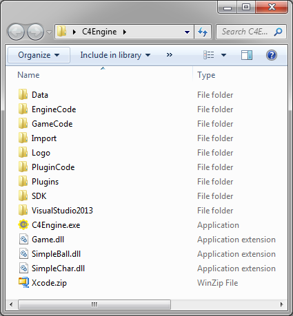
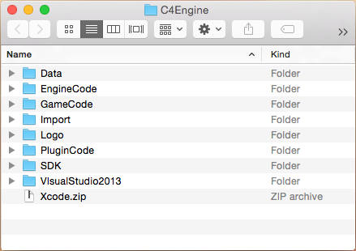

Getting Started
From C4 Engine Wiki
Contents |
Getting Started on Windows

C4-xxx-Code.zip, C4-xxx-Data.zip, and C4-xxx-Binaries.zip files have been extracted under Windows.Follow these instructions to get started with the Standard, Professional, and Academic Editions of the C4 Engine under Windows XP, Windows Vista, and Windows 7/8.
Installation
The C4 Engine is distributed as two ZIP files named C4-xxx-Code.zip and C4-xxx-Data.zip, where xxx is the version number. There is a third ZIP file named C4-xxx-Binaries.zip that contains the Windows binaries, but this file does not have to be downloaded if you're going to build the engine yourself.
To install, first create a directory somewhere on your hard drive in which you'll store all of the C4 files. Then copy the two or three ZIP files that you've downloaded to this new directory and extract them all. If you're using WinZip, choose “Extract to here” from the right click menu with each ZIP file selected. Once the files have been extracted, you no longer need the original ZIP files, and they may be deleted.
After extraction and removal of the original ZIP files, your C4 directory should look like the folder shown in Figure 1. If you extracted C4-xxx-Binaries.zip, then you will see the files C4Engine.exe, Game.dll, SimpleBall.dll, and SimpleChar.dll.
If you are not going to build the Mac version of the engine, then you may safely delete the file Xcode.zip. Otherwise, extract this file on a Mac to access the Xcode project files as described below.
Building
The C4 Engine can be built with Visual Studio 2013. The free Express Edition can be downloaded from the following location:
Microsoft Visual Studio 2013 Express Edition
The project files for Visual Studio 2013 are located at the following place inside the C4 Engine folder.
VisualStudio2013/C4/C4.sln
After opening the project file in Visual Studio, select “Build Solution” from the Build menu to build the engine. This will cause several binaries to be built: C4Engine.exe, Game.dll, SimpleBall.dll, SimpleChar.dll, and a bunch of DLLs that get stored in the Plugins directory.
Before building under Windows, make sure that you also have the DirectX SDK installed (June 2010 version). This is not included by default with any version of Windows or Visual Studio. The SDK can be downloaded from the following MSDN web site:
If you encounter an error while installing the DirectX SDK, see this Microsoft article about resolving it.
Running
To run C4, double-click on the C4Engine.exe application. You can also run from inside Visual Studio, but you will first need to set the working directory to "..\..\.." (without quotes). This can be set by opening up the Properties window for the Engine project and going to the Debugging page. (If the working directory is not set, the debug build of the engine will alert you to this fact when you try to run from inside Visual Studio.)
Tip: When running from the Visual Studio debugger, Windows automatically enables memory heap debugging features that are used by the entire process being debugged, including external libraries such as the graphics drivers. This can cause significant delays that do not appear when not running in the debugger. To disable these debugging features, set the Environment property in the Debugging page to "_NO_DEBUG_HEAP=1" (without quotes).
Getting Started on Mac OS X

C4-xxx-Code.zip and C4-xxx-Data.zip files have been extracted under Mac OS X.Follow these instructions to get started with the Standard, Professional, and Academic Editions of the C4 Engine under Mac OS X.
Installation
The C4 Engine is distributed as two ZIP files named C4-xxx-Code.zip and C4-xxx-Data.zip, where xxx is the version number. To install, first create a directory somewhere on your hard drive in which you'll store all of the C4 files. Then copy the two ZIP files that you've downloaded to this new directory and extract them both by double-clicking on them. The Finder will create folders named C4-xxx-Code and C4-xxx-Data to contain the extracted files, but we want all of the files to be placed in the enclosing directories. Open the folders named C4-xxx-Code and C4-xxx-Data, select all of the files, and drag them to the enclosing folder. Once this is done, you can delete the now empty C4-xxx-Code and C4-xxx-Data folders. After this is done, your C4 folder should look like the folder shown in Figure 2.
The folder named VisualStudio2013 contains Windows projects and can be safely deleted on the Mac.
Double-click on the Xcode.zip file to extract the Xcode project files. (The Finder will create the Xcode folder—do not copy its contents to the enclosing folder.)
Building
The C4 Engine can be built with Xcode 6, which can be downloaded for free from the following location:
To open the Xcode project for C4, open the Xcode folder and the C4 folder inside it. Double-click on the file C4.xcodeproj to open the project in Xcode.
Set the Active Scheme to "Build All Optimized" by selecting it from the popup menu in the upper-left corner of the project window.
Select Build from the Product menu, and the compiler will build the engine, the game modules, and the tools.
Running
To run C4, double-click on the C4.app application that is created in the C4 folder when you build. You can also run from inside Xcode.